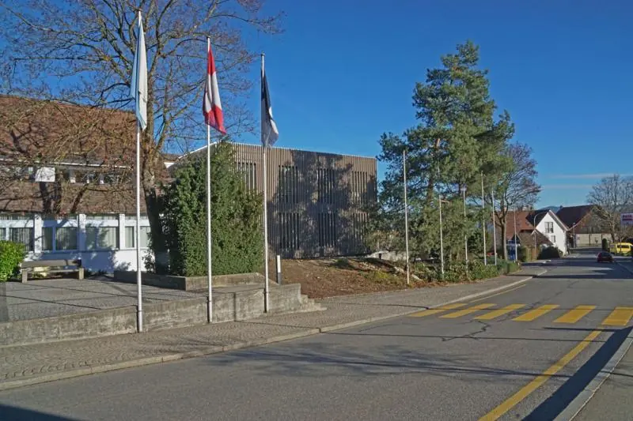

Projekt 306 · Verwalten · Arbeiten
Gemeindehaus Maur
Erweiterung, Umbau und Sanierung des Gemeindehauses
Erweiterung, Umbau und Sanierung des Gemeindehauses in Betrieb und in Etappen in Maur.

- Verfahren
- Planerwahl. 1. Rang
- Status
- Realisiert
- Fertigstellung
- 2015
- Bearbeitung
- SIA-Phasen 3.1 Vorprojekt bis 5.3 Inbetriebnahme
- Bauherr
- Gemeinde Maur
- Kosten
- Tot.: 2.6 Mio. Fr. (BKP 1-9) Erw.:1.5 Mio. Fr. (BKP 1-9)
- Kenndaten
- Erweiterung 815 m3 (GV), 225 m2 (GF) (SIA 416)
- Bauzeit
- Juni 2014 – Dezember 2014, 7 Monate
- Adresse
- Zürichstrasse 8, Maur
Situation
Das Gemeindehaus liegt im Dorfzentrum von Maur und grenzt unmittelbar an die historisch geschützte Kernzone an. Es handelt sich um zwei eingeschossige Gebäude mit zwei Dachgeschossen - einem Hauptgebäude von 1962 und einem Erweiterungsgebäude von 1982. In den beiden Gebäuden ist die Verwaltung der Gemeinde Maur und im Untergeschoss (1982) die Feuerwehr untergebracht.
Raumaufteilung
Die Erneuerung und Erweiterung des Gemeindehauses zur Verbesserung des Raumangebotes besteht aus drei Gebäudeteilen:
Bestandsgebäude von 1962 - identifikationsspendender Baukörper an der Zürichstrasse (Sanierung und Umbau) Aufstockung - in der Höhe zurückgenommener, zweigeschossiger Ersatzneubau im Zentrum des Areals (Neubau Minergie Standard) Erweiterung - dreigeschossiger Kopfbau an der Zürichstrasse mit neuer Eingangshalle (Neubau Minergie Standard).
Die Gebäudeteile sind barrierefrei miteinander verbunden und gruppieren sich um einen Innenhof. Die Baukörper nehmen in der Ausrichtung und im Volumen die Körnung der angrenzenden Kernzone auf.
Materialkonzept
Das Nebeneinander von Bestand und Neubau wird in der Materialität der Fassaden aufgenommen. Im Bestandsgebäude von 1962 ist vor dem zweischaligen Mauerwerksaufbau eine hinterlüftete Konstruktion aus horizontalen Plattenformaten vorgesehen. Diese Fassadenkonstruktion wird den Sanierungsanforderungen gerecht und unterstreicht optisch die zu erhaltende Horizontalität des Gebäudes von 1962. Die Neubauteile der Erweiterung und der Aufstockung sind als Massivbau mit einer Lochfassade vorgesehen. Die zwei Typen der hochrechteckigen Fenster werden auf einem Fassadenraster angeordnet. Die Fassade besteht aus zweischaligem Mauerwerk mit einer Vorsatzschale aus z.B. Klinker, weiss geschlämmt.
Projektteam
- Generalplaner / Bauleitung
- apb architekten ag, Uster
- Projektleitung
- Pia Kiebel
- Bauingenieur (Beton)
- Buchmann Partner AG, Uster
- Bauingenieur (Holz)
- Pirmin Jung Ingenieure für Holzbau AG, Rain
- Elektroingenieur
- Elprom Partner AG, Dübendorf
- HLS-Ingenieur
- Schoch Reibenschuh AG, Volketswil
- Bauphysik
- Pirmin Jung Büro für Bauphysik AG, Rain